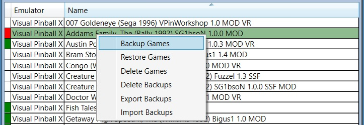

Virtual Pinball Backup Manager - managing your backups, one game at a time
Overview
This panel displays all games that are installed in the Pup database in a sortable table.
Entries within this table have a colour coded first column marker used to indicate the status of backups for the corresponding game. Users may select one or more rows in this table to operate on using the buttons seen across the top of the table. The most recently selected row is treated as the primary row selection and information about this row is displayed in other panels within the application.
In the screenshot shown, the first three rows are selected.
The first row is a game that has not been backed up - shown with a white first column marker.
The second is a game that has been backed up but the backup does not match the game on disk - shown with a red first column marker.
The third row is a game that has been backed up and the backup matches the game on disk - shown with a green first column marker.
Hovering over a game marked as not matching the backup (first column marker shown in red) will provide a tooltip identifying all the differences between the backup file and the files currently installed. This allows the user to better understand the inconsistency and determine how to resolve it.
In the example below, the game Addams Family, The (Bally 1992) SG1bsoN 1.0.0 MOD is being hovered over (screen capture does not show the pointer icon) and shows that a new POV file has been added to the game but not to the games back up.
Changes shown in the tooltip are broken into the following categories:
Selected Game Filter Variables
Custom filter variable (overrides) created by the user differ between the live system and backup. Management of the selected games filter variables are discussed in Selected Game Filter Variables.
Selected Game Custom Path Filters
Custom path filters created by the user differ between the live system and backup. Management of the selected games custom filters is discussed in Selected Game Custom Filters.
Selected Game Content
Game content such as game files or game related entries in merged files (such as B2STableSettings.xml) differ between the live system and backup.
Selected Game Pinup Details
Pinup database values for the game differ between the live system and backup.
Selected Game Registry Content
Game specific registry settings differ between the live system and backup.
The tooltip will describe the nature of the differences between the live system and backup for each difference.
The Filter by Emulator combo box allows users to filter the games displayed in the game details table.
There are two filters available:
Emulator allows users to limit displayed games based on the emulator that game is using.
Game Status allows users to limit displayed games based on the games relationship to its backup.
Sorting Games
The headings in the game list allow rows to be sorted. Clicking on the headers will adjust row sorting. In this example, rows are being sorted by game name in a ascending order.
Sorting can be performed on both the Emulator and Name columns in either an ascending or descending order. As can be seen in the Name column heading, an arrow identifies the sort order being used.
Six buttons across the top of the Installed Games panel provide the key operations that are perfomed within VPBM. With the exception of "Import Backups" operations are performed on all selected games and described below:
Backup Games
Pressing this button triggers processing to loop through all selected games and generate new backup files for them (if required), these backup files will be stored within the configured backup directory within a subdirectory based on the games emulator. Backup files contain a full set of fields and metadata used to restore the game when required, this content includes:
All emulator specific game file content, such as (for VPX) rom files, backglass and POV files, and (for Future Pinball) BAM config files. These files will vary by emulator.
Pinup Pup Packs - for games with pup packs.
Pinup Player Media - for display within Pinup Popper.
A game manifest file (manifest.json) which identifies and charecterises every file within the backup file.
A game details file (gameDetails.json) which stores every piece of game information found in the Pinup database Games table for the game.
A registry settings file (registrySettings.json) which stores and game specific emulator registry settings.
A custom file paths file (customFilePaths.json) which stores filter information to locate and additional 'game specific' emualtor files to be stored.
Restore Games
Pressing this button triggers processing to loop through all selected games and restoring them to a state consistant with the backup file (if required).
This action effectively performs the reverse of the Backup Games button.
All game and pinup files are restored, additionally the Pinup database is updated to match the stored content and and registry settings defined for the game are also updated.
Delete Games
Pressing this button deletes the game content, removing the game entirely from the current system for all selected games.
Any backup files are NOT deleted meaning that they can be re-imported by using the Import Backups button, or by dragging a backed up file from the Windows file explorer onto the Games Table. A warning dialog is provided to ensure that users confirm the delete action is required.
Delete Backups
Pressing this button deletes all selected game backups, however gamre content is left as is.
Export Backups
This button is only enabled if two pre-conditions are met:
An Export Path value has been configured in settings to specify where exporeted backups should be placed.
An Export Host Identifier value has been configured in settings to specify which host to generate exported backups for.
If clicked, existing backups for all selected games will be processed, with new copies made encoded for export to the intended Export Host Identifier.
Once generated, these exports can be copied onto media and transferred to the export host.
Installed Games Context Menu
The operations provides by the Games Table Control Buttons section above are also available via a right mouse button context menu within the Games Table.

Progress Reporting
Processing triggered by these buttons can take some time, as such a progress bar is displayed across the bottom of the application while operations are occuring as shown below.